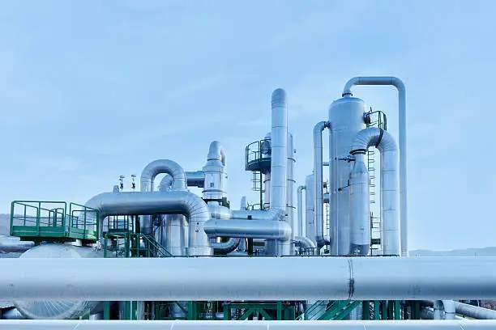
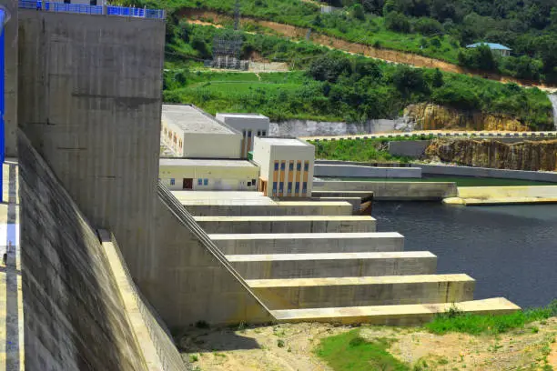

Our Water & Irrigation Projects
A comprehensive showcase of our expertise in executing large-scale water supply systems, pipelines, and agricultural irrigation networks.

Water Supply Pipeline Network
Advanced underground and surface pipeline deployment for seamless water distribution.

Modern Irrigation Infrastructure
Efficient channeling and smart water distribution systems for agricultural lands.

High-Capacity Pumping Station
Robust mechanical setup and management of heavy-duty water pumps.

Water Resource Management
Sustainable engineering solutions for water conservation and canal networks.

Treatment & Distribution Unit
Complete execution of purification, filtration, and storage facilities.

Large-Scale Water Infrastructure
Comprehensive execution of industrial-grade water supply developments.